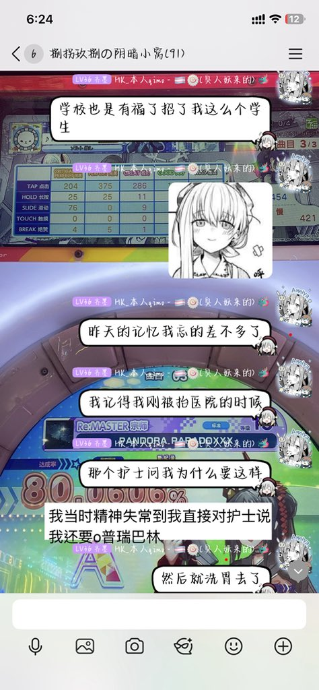

索瑟尔 𝓢𝓸𝓻𝓬𝓮𝓻𝓮𝓻🍥
@Sorcerer1311
RT @QimoHK300311: 今天面基了面条和索瑟尔
我现在看到精神药品四个字我是真ptsd了，虽然说昨天精神失常到我现在都快忘掉昨天的所有经历了，但是我当时在医院洗胃的那个感觉是真难受以后真不敢了
连用NDRI和BZD并超医嘱使用，一个抑制剂一个再摄取抑制剂，一个拮抗受…

HK_本人qimo丶🍥🏳️⚧️
@QimoHK300311
今天面基了面条和索瑟尔
我现在看到精神药品四个字我是真ptsd了，虽然说昨天精神失常到我现在都快忘掉昨天的所有经历了，但是我当时在医院洗胃的那个感觉是真难受以后真不敢了
连用NDRI和BZD并超医嘱使用，一个抑制剂一个再摄取抑制剂，一个拮抗受体一个增加血药浓度
说直白一点我昨天就是在左右脑互搏 https://t.co/xoVNxdoCMA